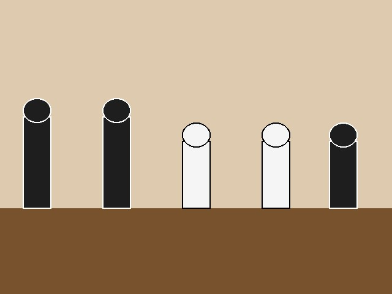

The Staunton Chess Set
The Staunton chess set is the standard design used in almost every official chess tournament today. It was named after the English chess master Howard Staunton and first produced by the London firm Jaques of London. The pieces are recognisable by their simple, weighted bases and clear, easily distinguishable shapes, which makes them practical for fast, serious play rather than purely decorative display. Because every piece looks different at a glance, players can recognise the position on the board very quickly, even from a distance.
Key Dates
- 1849 – The design is registered by Nathaniel Cook
- 1849 – Howard Staunton endorses the set and lends his name to it
- 1851 – The set is used at the first international chess tournament in London
- 1924 – FIDE, the World Chess Federation, is founded and later recommends the design
- 1972 – The set gains worldwide fame during the Fischer–Spassky World Championship
- Today – The Staunton pattern remains the only design approved for FIDE-rated events
Key Facts
- The king is the tallest piece, followed closely by the queen
- Pieces are weighted and felted on the bottom for stability and quiet movement
- Wooden Staunton sets are usually carved from boxwood and ebony or stained hardwoods
- A standard tournament king is between 90 and 105 millimetres tall
- The set was patented under English design law shortly after its release

Chess is the struggle against the error.
Listen: The Sound of a Chess Clock
Below is a short audio clip that represents the double tick of a mechanical chess clock, familiar to every tournament player.
To learn more about the official equipment standards, visit the FIDE official website, the governing body of world chess.